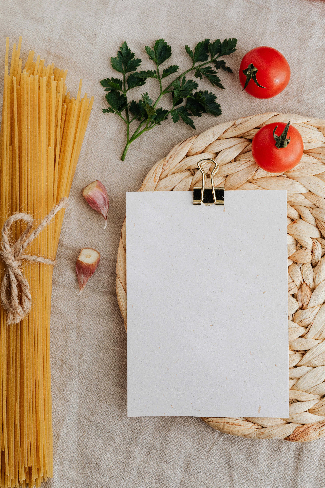
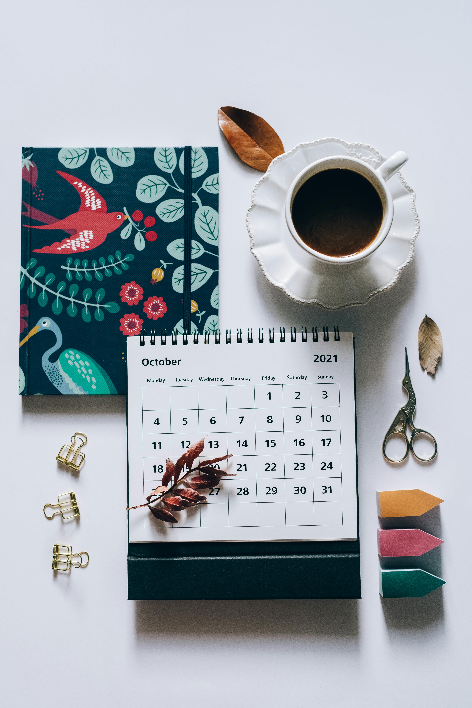

How It Works
Snackademic is designed with students in mind — making it easy, fun, and efficient to plan meals and lunchboxes that fit your lifestyle. Whether you're trying to save time, eat healthier, or just stay organized. Here’s how you can get the most out of the platform:
1. Discover Recipes
Head over to the Recipes page to explore a growing collection of student-friendly meals. Each recipe includes detailed ingredient lists and simple, step-by-step instructions so you can easily cook at home — no fancy equipment or skills needed. Looking for something specific? Browse by categories like Classic, Vegetarian, and more, or use filters to match your preferences. Whether you're in the mood for something quick, budget-friendly, or tailored to your dietary needs, Snackademic helps you find the right recipe in no time.
2. Plan Your Meals
Found a recipe you like? Add it directly to your Calendar. On the Calendar page, you can drag and drop recipes onto specific days to build your weekly or monthly meal schedule. What makes it even smarter? Each meal shows how many days it can stretch — meaning if a recipe makes enough for three lunchboxes, you’ll see a green bar spanning across those three days. This helps you avoid over-planning and keeps your meals balanced throughout the week.
3. Use Meal Plans (When You Don’t Want to Decide)
Not in the mood to choose recipes one by one? No problem! Visit the Meal Plans page to select from pre-made plans tailored for different needs and time periods. These curated sets of recipes are designed to work together and will automatically fill your calendar — saving you time and decision fatigue.
4. Stay Flexible
Life can be unpredictable — and so can your schedule. That’s why Snackademic makes it easy to rearrange meals whenever you need. Just drag and drop recipes around your calendar to shift your plan as things change. You're in control. Snackademic is your personal kitchen sidekick, making meal planning easier, smarter, and more delicious — so you can focus on your studies and life outside the kitchen.